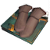
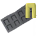
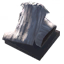
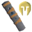
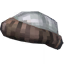
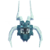
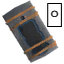

Armaduras, escudos e acessórios
Armaduras, escudos e acessórios em Valheim – 148 itens com bioma, origem, ferramenta necessária, receita e utilização.
Nenhum item encontrado.
 Armadura de lobo: peito
Armadura de lobo: peito
Um colete de pele de lobo, quente e de aparência selvagem. Protege contra o frio.
Como obter
- Fabricar: Forja (nível 2) a partir de 20 ×
 Prata, 5 ×
Prata, 5 ×  Pele de lobo, 1 ×
Pele de lobo, 1 ×  Corrente · por melhoria: 5 × Prata, 2 × Pele de lobo
Corrente · por melhoria: 5 × Prata, 2 × Pele de lobo
 Armadura de lobo: pernas
Armadura de lobo: pernas
Culote felpudo de pele de lobo.
Como obter
- Fabricar: Forja (nível 2) a partir de 20 × Prata, 5 × Pele de lobo, 4 ×
 Dente de lobo · por melhoria: 5 × Prata, 2 × Pele de lobo, 1 × Dente de lobo
Dente de lobo · por melhoria: 5 × Prata, 2 × Pele de lobo, 1 × Dente de lobo
 Barbatanas do destino
Barbatanas do destino
Esvazie a mente e torne-se sem forma, um só com a água.
Como obter
- Fabricar: Forja a partir de 5 ×
 Quitina, 5 ×
Quitina, 5 ×  Escala de Serpente, 1 ×
Escala de Serpente, 1 ×  Troféu Serpente
Troféu Serpente
 Braceletes dos corajosos
Braceletes dos corajosos
Sua mente se endurece, assim como seus golpes.
Como obter
- Fabricar: Forja a partir de 5 ×
 Metal preto, 5 ×
Metal preto, 5 ×  Pele de Lox, 1 ×
Pele de Lox, 1 ×  Troféu de Lox
Troféu de Lox
 Brincos pulsantes
Brincos pulsantes
Se você escutar atentamente, pode ouvir os ecos fracos de almas perdidas...
Como obter
- Fabricar: Forja preta a partir de 5 ×
 Carapaça, 5 ×
Carapaça, 5 ×  Éter refinado, 1 ×
Éter refinado, 1 ×  Troféu Gjall
Troféu Gjall
 Broche de ferro
Broche de ferro
Um acessório delicado, mas defensivo.
Como obter
- Fabricar: Forja a partir de 5 ×
 Ferro, 5 ×
Ferro, 5 ×  Casca antiga, 1 ×
Casca antiga, 1 ×  Troféu de Sanguessuga
Troféu de Sanguessuga
 Broquel de bronze
Broquel de bronze
Um escudo de bronze polido, bom para desviar uma espada ou outra.
Como obter
 Broquel de carapaça
Broquel de carapaça
O crânio de um buscador é sólido, mas não é pesado, o que o torna perfeito para um escudo pequeno e ágil.
Como obter
- Fabricar: Forja preta a partir de 16 × Carapaça, 3 ×
 Escamas, 10 × Éter refinado · por melhoria: 8 × Carapaça, 3 × Escamas, 3 × Éter refinado
Escamas, 10 × Éter refinado · por melhoria: 8 × Carapaça, 3 × Escamas, 3 × Éter refinado
 Broquel de ferro
Broquel de ferro
É leve e tem o centro curvado, o que o torna excelente para desviar ataques.
Como obter
- Fabricar: Forja (nível 2) a partir de 10 × Ferro, 4 × Casca antiga · por melhoria: 5 × Ferro, 1 × Casca antiga
 Broquel Nórdico
Broquel Nórdico
Um método de proteção eficaz nas mãos dos suficientemente habilidosos.
Como obter
- Fabricar: Forja preta (nível 4) a partir de 10 ×
 Ourossangue, 1 ×
Ourossangue, 1 ×  Molde: Broquel Nórdico, 10 ×
Molde: Broquel Nórdico, 10 ×  Madeira Nórdica · por melhoria: 5 × Ourossangue, 5 × Madeira Nórdica
Madeira Nórdica · por melhoria: 5 × Ourossangue, 5 × Madeira Nórdica - Cozinhar: Fundição gélida a partir de
 Peça fundida: Broquel Nórdico
Peça fundida: Broquel Nórdico
 Cabeça de urso
Cabeça de urso
Deixe a fúria primordial de um urso poderoso te consumir.
Como obter
- Fabricar: Bancada de trabalho (nível 2) a partir de 5 ×
 Pele de urso, 1 ×
Pele de urso, 1 ×  Troféu de Urso · por melhoria: 2 × Pele de urso
Troféu de Urso · por melhoria: 2 × Pele de urso

Calças da VanguardaCalças quentes adequadas para um clima frio. As botas oferecem excelente tração em terreno congelado.
Como obter
- Fabricar: Forja preta (nível 4) a partir de 12 × Ourossangue, 1 ×

Molde: Calças da Vanguarda, 8 × Feixe de pelos de elaking, 4 ×
Feixe de pelos de elaking, 4 ×  Couro de foca · por melhoria: 6 × Ourossangue, 4 × Feixe de pelos de elaking, 2 × Couro de foca
Couro de foca · por melhoria: 6 × Ourossangue, 4 × Feixe de pelos de elaking, 2 × Couro de foca - Cozinhar: Fundição gélida a partir de
 Peça fundida: Calças da Vanguarda
Peça fundida: Calças da Vanguarda
 Calças de Ask
Calças de Ask
O primeiro homem a vagar por Midgard preferiu avançar com cuidado. Os portadores dessas calças poderiam aprender algumas coisas com ele.
Como obter
- Fabricar: Forja preta (nível 3) a partir de 15 ×
 Fio de linho, 4 × Pele de Lox, 10 ×
Fio de linho, 4 × Pele de Lox, 10 ×  Pele de Asksvin · por melhoria: 10 × Fio de linho, 2 × Pele de Lox, 5 × Pele de Asksvin
Pele de Asksvin · por melhoria: 10 × Fio de linho, 2 × Pele de Lox, 5 × Pele de Asksvin
 Calças de couro
Calças de couro
Guincham um bocadinho quando andas.
Como obter
- Fabricar: Bancada de trabalho (nível 2) a partir de 6 ×
 Pele de veado · por melhoria: 6 × Pele de veado, 5 ×
Pele de veado · por melhoria: 6 × Pele de veado, 5 ×  Fragmentos de ossos
Fragmentos de ossos
 Calças de couro de troll
Calças de couro de troll
Caneleiras de couro de troll.
Como obter
- Fabricar: Bancada de trabalho (nível 2) a partir de 5 ×
 Pele de troll · por melhoria: 2 × Pele de troll
Pele de troll · por melhoria: 2 × Pele de troll
 Calças de Embla
Calças de Embla
Se a primeira feiticeira usava calças exatamente como estas ou não, nós nunca saberemos.
Como obter
- Fabricar: Mesa de encantamentos Galdr (nível 2) a partir de 20 × Fio de linho, 20 × Éter refinado, 10 × Pele de Asksvin · por melhoria: 10 × Fio de linho, 5 × Éter refinado
 Calças de Fenris
Calças de Fenris
As pernas da besta eram magras e fortes, para que ela pudesse dar grandes saltos.
Como obter
- Fabricar: Bancada de trabalho (nível 2) a partir de 20 ×
 Cabelo de Fenris, 5 × Pele de lobo, 10 ×
Cabelo de Fenris, 5 × Pele de lobo, 10 ×  Farrapos de couro · por melhoria: 5 × Cabelo de Fenris, 3 × Pele de lobo, 4 × Farrapos de couro
Farrapos de couro · por melhoria: 5 × Cabelo de Fenris, 3 × Pele de lobo, 4 × Farrapos de couro
 Calças de pele de lox
Calças de pele de lox
Macias, silenciosas e flexíveis.
Como obter
- Fabricar: Bancada de trabalho (nível 2) a partir de 5 × Pele de Lox, 8 × Fragmentos de ossos, 2 ×
 Raiz · por melhoria: 3 × Pele de Lox, 4 × Fragmentos de ossos, 1 × Raiz
Raiz · por melhoria: 3 × Pele de Lox, 4 × Fragmentos de ossos, 1 × Raiz
 Calças de tecido com éter
Calças de tecido com éter
As calças usadas pelos magos sempre são especialmente justas. O desconforto alimenta o foco que é necessário para a magia...
Como obter
- Fabricar: Mesa de encantamentos Galdr a partir de 20 × Fio de linho, 20 × Éter refinado, 10 × Escamas · por melhoria: 10 × Fio de linho, 5 × Éter refinado
 Calças de trapos
Calças de trapos
Um remédio simples para a nudez.
Como obter
- Fabricar: Bancada de trabalho a partir de 5 × Farrapos de couro · por melhoria: 5 × Farrapos de couro
 Calças do Invocador
Calças do Invocador
Perneiras justas para evitar que o frio chegue à sua pele.
Como obter
- Fabricar: Mesa de encantamentos Galdr (nível 3) a partir de 6 × Ourossangue, 1 ×
 Molde: Calças do Invocador, 6 ×
Molde: Calças do Invocador, 6 ×  Pele de alce, 5 ×
Pele de alce, 5 ×  Nornafio · por melhoria: 3 × Ourossangue, 3 × Pele de alce, 3 × Nornafio
Nornafio · por melhoria: 3 × Ourossangue, 3 × Pele de alce, 3 × Nornafio - Cozinhar: Fundição gélida a partir de
 Peça fundida: Calças do Invocador
Peça fundida: Calças do Invocador

Calças do ProtetorCalças e botas pesadas para manter você aquecido enquanto passa pela neve profunda.
Como obter
- Fabricar: Forja preta (nível 4) a partir de 20 × Ourossangue, 1 ×
 Molde: Calças do Protetor, 8 × Pele de alce, 4 ×
Molde: Calças do Protetor, 8 × Pele de alce, 4 ×  Tiras de couro · por melhoria: 15 × Ourossangue, 3 × Pele de alce, 3 × Tiras de couro
Tiras de couro · por melhoria: 15 × Ourossangue, 3 × Pele de alce, 3 × Tiras de couro - Cozinhar: Fundição gélida a partir de
 Peça fundida: Calças do Protetor
Peça fundida: Calças do Protetor
 Caneleiras alcolchoadas
Caneleiras alcolchoadas
Proteção de perna habilmente trabalhada.
Como obter
- Fabricar: Forja (nível 2) a partir de 10 × Ferro, 20 × Fio de linho · por melhoria: 3 × Ferro, 10 × Fio de linho
 Caneleiras de bronze
Caneleiras de bronze
Grevas de bronze para proteger as tuas pernas.
Como obter
- Fabricar: Forja a partir de 5 ×
 Bronze, 2 × Pele de veado · por melhoria: 3 × Bronze
Bronze, 2 × Pele de veado · por melhoria: 3 × Bronze
 Caneleiras de raiz
Caneleiras de raiz
Uma armadura leve, resultado de uma combinação rara de raízes anciãs e cortiça.
Como obter
- Fabricar: Bancada de trabalho (nível 2) a partir de 10 × Raiz, 10 × Casca antiga, 2 × Pele de veado · por melhoria: 2 × Raiz, 5 × Casca antiga
 Capa de linho
Capa de linho
Uma simples capa de viajante.
Como obter
- Fabricar: Bancada de trabalho (nível 2) a partir de 20 × Fio de linho, 1 × Prata · por melhoria: 4 × Fio de linho
 Capa de Lox
Capa de Lox
Uma pele de uma das grandes bestas, grossa e quente.
Como obter
- Fabricar: Bancada de trabalho (nível 2) a partir de 6 × Pele de Lox, 2 × Prata · por melhoria: 2 × Pele de Lox
 Capa de Odin
Capa de Odin
Os melhores guerreiros de Odin merecem o melhor tecido.
Como obter
- Fabricar: Bancada de trabalho a partir de 10 × Farrapos de couro, 4 ×
 Carvão · por melhoria: 5 × Farrapos de couro, 2 × Carvão
Carvão · por melhoria: 5 × Farrapos de couro, 2 × Carvão
 Capa de pele de alce
Capa de pele de alce
Uma capa quente com detalhes delicados em fios de ouro.
Como obter
- Fabricar: Forja preta (nível 4) a partir de 6 × Pele de alce, 2 ×
 Tendão de alce, 5 × Ourossangue · por melhoria: 3 × Pele de alce, 1 × Tendão de alce, 2 × Ourossangue
Tendão de alce, 5 × Ourossangue · por melhoria: 3 × Pele de alce, 1 × Tendão de alce, 2 × Ourossangue
 Capa de pele de lobo
Capa de pele de lobo
Os lobos são sobreviventes naturais. Este apenas teve azar. Agora a sua pele irá aquecer-te na neve.
Como obter
- Fabricar: Bancada de trabalho (nível 2) a partir de 6 × Pele de lobo, 4 × Prata, 1 ×
 Troféu Lobo · por melhoria: 4 × Pele de lobo, 2 × Prata
Troféu Lobo · por melhoria: 4 × Pele de lobo, 2 × Prata
 Capa de pele de troll
Capa de pele de troll
A pele de troll é resistente e fléxível.
Como obter
- Fabricar: Bancada de trabalho (nível 2) a partir de 10 × Pele de troll, 10 × Fragmentos de ossos · por melhoria: 5 × Pele de troll, 5 × Fragmentos de ossos
 Capa de pele de veado
Capa de pele de veado
Rústico e chique.
Como obter
- Fabricar: Bancada de trabalho (nível 2) a partir de 4 × Pele de veado, 5 × Fragmentos de ossos · por melhoria: 4 × Pele de veado, 5 × Fragmentos de ossos
 Capa de penas
Capa de penas
Com esta capa você se sente mais leve, quase como se você pudesse voar!
Como obter
- Fabricar: Mesa de encantamentos Galdr a partir de 10 ×
 Penas, 5 × Escamas, 20 × Éter refinado · por melhoria: 2 × Penas, 5 × Escamas, 3 × Éter refinado
Penas, 5 × Escamas, 20 × Éter refinado · por melhoria: 2 × Penas, 5 × Escamas, 3 × Éter refinado
 Capa do Invocador
Capa do Invocador
Uma estranha magia está tecida nesta capa, tornando-a leve e quente.
Como obter
- Fabricar: Mesa de encantamentos Galdr (nível 4) a partir de 6 × Couro de foca, 2 × Nornafio, 5 × Ourossangue, 15 × Éter refinado · por melhoria: 3 × Couro de foca, 1 × Nornafio, 2 × Ourossangue, 5 × Éter refinado
 Capacete Acolchoado
Capacete Acolchoado
Um encaixe confortável, bem feito.
Como obter
- Fabricar: Forja a partir de 10 × Ferro, 15 × Fio de linho · por melhoria: 5 × Ferro, 10 × Fio de linho
 Capacete de carapaça
Capacete de carapaça
As pessoas podem dizer que você parece uma formiga gigante. Mas só dirão isso uma vez.
Como obter
- Fabricar: Forja preta a partir de 16 × Carapaça, 3 × Escamas, 2 ×
 Mandíbula, 4 × Éter refinado · por melhoria: 8 × Carapaça, 1 × Escamas, 2 × Éter refinado
Mandíbula, 4 × Éter refinado · por melhoria: 8 × Carapaça, 1 × Escamas, 2 × Éter refinado
 Capuz da Vanguarda
Capuz da Vanguarda
Algo para proteger o pescoço dos elementos e dos dentes afiados dos inimigos.
Como obter
- Fabricar: Forja preta (nível 4) a partir de 5 × Couro de foca, 1 ×
 Molde: Capuz da Vanguarda, 5 × Pele de alce, 1 × Tendão de alce · por melhoria: 3 × Couro de foca, 3 × Pele de alce, 1 × Tendão de alce
Molde: Capuz da Vanguarda, 5 × Pele de alce, 1 × Tendão de alce · por melhoria: 3 × Couro de foca, 3 × Pele de alce, 1 × Tendão de alce - Cozinhar: Fundição gélida a partir de

Peça fundida: Capuz da Vanguarda
 Capuz de Ask
Capuz de Ask
Tendo sido o primeiro homem de Midgard, Ask sabia que era importante não chamar muita atenção.
Como obter
- Fabricar: Forja preta (nível 3) a partir de 15 × Fio de linho, 4 × Pele de Lox, 10 × Pele de Asksvin · por melhoria: 10 × Fio de linho, 2 × Pele de Lox, 5 × Pele de Asksvin
 Capuz de Embla
Capuz de Embla
Até mesmo a primeira feiticeira apreciava o lado místico de cobrir o rosto. Correm rumores de que honrá-la desse modo tornará os seus feitiços ainda mais poderosos.
Como obter
- Fabricar: Mesa de encantamentos Galdr (nível 2) a partir de 16 × Fio de linho, 15 × Éter refinado, 2 × Pele de Asksvin · por melhoria: 8 × Fio de linho, 5 × Éter refinado
 Capuz de Fenris
Capuz de Fenris
Os olhos da besta eram sábios e conhecedores, para que ela pudesse medir a força de um guerreiro só de olhar.
Como obter
- Fabricar: Bancada de trabalho (nível 2) a partir de 20 × Cabelo de Fenris, 2 × Pele de lobo, 1 ×
 Troféu do Cultista · por melhoria: 5 × Cabelo de Fenris, 4 × Pele de lobo
Troféu do Cultista · por melhoria: 5 × Cabelo de Fenris, 4 × Pele de lobo
 Capuz de Odin
Capuz de Odin
Os melhores guerreiros de Odin merecem o melhor tecido.
Como obter
- Fabricar: Bancada de trabalho a partir de 10 × Farrapos de couro, 4 × Carvão · por melhoria: 5 × Farrapos de couro, 2 × Carvão
 Capuz de pele de lox
Capuz de pele de lox
Veja o mundo como ele é visto por um lox.
Como obter
- Fabricar: Bancada de trabalho (nível 2) a partir de 4 × Pele de Lox, 4 × Fragmentos de ossos, 2 ×
 Raízes de Writhan · por melhoria: 2 × Pele de Lox, 2 × Fragmentos de ossos, 1 × Raízes de Writhan
Raízes de Writhan · por melhoria: 2 × Pele de Lox, 2 × Fragmentos de ossos, 1 × Raízes de Writhan
 Capuz de tecido com éter
Capuz de tecido com éter
A feitiçaria se revela nos olhos, então a maioria dos magos usa capuzes para esconder suas intenções ocultas.
Como obter
- Fabricar: Mesa de encantamentos Galdr a partir de 16 × Fio de linho, 15 × Éter refinado, 2 × Ferro · por melhoria: 8 × Fio de linho, 5 × Éter refinado
 Carapuça do Invocador
Carapuça do Invocador
Os espíritos da terra atendem ao seu chamado. Terão sido enganados pelo seu disfarce?
Como obter
- Fabricar: Mesa de encantamentos Galdr (nível 3) a partir de 2 × Tendão de alce, 1 ×
 Molde: Carapuça do Invocador, 1 ×
Molde: Carapuça do Invocador, 1 ×  Troféu de alce, 3 × Nornafio · por melhoria: 1 × Tendão de alce, 2 × Nornafio
Troféu de alce, 3 × Nornafio · por melhoria: 1 × Tendão de alce, 2 × Nornafio - Cozinhar: Fundição gélida a partir de
 Peça fundida: Carapuça do Invocador
Peça fundida: Carapuça do Invocador
 Casaco de Fenris
Casaco de Fenris
A besta podia respirar fundo, para que seu uivo pudesse ser ouvido em toda a terra.
Como obter
- Fabricar: Bancada de trabalho (nível 2) a partir de 20 × Cabelo de Fenris, 5 × Pele de lobo, 10 × Farrapos de couro · por melhoria: 5 × Cabelo de Fenris, 3 × Pele de lobo, 4 × Farrapos de couro
 Chapéu comemorativo
Chapéu comemorativo
Não tem como não se sentir feliz usando esse chapéu!
Como obter
- Fabricar: Bancada de trabalho (nível 2) a partir de 2 × Pele de veado, 1 × Bronze, 1 × Pele de urso, 1 ×
 Pérola de âmbar · por melhoria: 1 × Pele de veado, 1 × Bronze
Pérola de âmbar · por melhoria: 1 × Pele de veado, 1 × Bronze
 Chapéu de palha
Chapéu de palha
A forma ideal de se evitar insolação.
Como obter
- Comprar: Hildir · 300 moedas · depois de devolver Baú de latão da Hildir

Chapéu de pele cinzaUm chapéu quente de pele, feito com lã de altíssima qualidade.
Como obter
- Comprar: Hildir · 300 moedas · depois de devolver Baú de bronze da Hildir
 Chapéu de pele marrom
Chapéu de pele marrom
Um chapéu quente de pele, feito com couro de altíssima qualidade.
Como obter
- Comprar: Hildir · 200 moedas · depois de devolver Baú de latão da Hildir
 Chapéu de pescador
Chapéu de pescador
Este chapéu estiloso só pode ser usado pelos pescadores mais pacientes.
Como obter
- Fabricar: Bancada de trabalho a partir de 1 ×
 Perca, 1 ×
Perca, 1 ×  Lúcio, 1 ×
Lúcio, 1 ×  Atum, 1 ×
Atum, 1 ×  Tetra, 1 ×
Tetra, 1 ×  Peixe Troll, 1 ×
Peixe Troll, 1 ×  Arenque gigante, 1 ×
Arenque gigante, 1 ×  Garoupa, 1 ×
Garoupa, 1 ×  Garoupa estrelada, 1 ×
Garoupa estrelada, 1 ×  Peixe-pescador, 1 ×
Peixe-pescador, 1 ×  Salmão do norte, 1 ×
Salmão do norte, 1 ×  Peixe magma, 1 ×
Peixe magma, 1 ×  Baiacu · por melhoria: 1 × Perca, 1 × Lúcio, 1 × Atum, 1 × Tetra, 1 × Peixe Troll, 1 × Arenque gigante, 1 × Garoupa, 1 × Garoupa estrelada, 1 × Peixe-pescador, 1 × Salmão do norte, 1 × Peixe magma, 1 × Baiacu
Baiacu · por melhoria: 1 × Perca, 1 × Lúcio, 1 × Atum, 1 × Tetra, 1 × Peixe Troll, 1 × Arenque gigante, 1 × Garoupa, 1 × Garoupa estrelada, 1 × Peixe-pescador, 1 × Salmão do norte, 1 × Peixe magma, 1 × Baiacu
 Chapéu Festivo
Chapéu Festivo
Um capuz vermelho, ao estilo dos gnomos domésticos.
Como obter
- Comprar: Haldor · 100 moedas
 Chapéu laranja extravagante
Chapéu laranja extravagante
Um chapéu laranja extravagante.
Como obter
- Comprar: Hildir · 300 moedas · depois de devolver Baú de bronze da Hildir
 Chapéu roxo simples
Chapéu roxo simples
Um chapéu roxo simples, mas elegante.
Como obter
- Comprar: Hildir · 150 moedas
 Chapéu vermelho simples
Chapéu vermelho simples
Um chapéu vermelho simples, mas elegante.
Como obter
- Comprar: Hildir · 150 moedas
 Chapéu Vvrde extravagante
Chapéu Vvrde extravagante
Um chapéu verde extravagante.
Como obter
- Comprar: Hildir · 250 moedas · depois de devolver Baú de prata da Hildir
 Colete de carapaça
Colete de carapaça
Um colete feito da carapaça polida de um inseto gigante.
Como obter
- Fabricar: Forja preta a partir de 20 × Carapaça, 3 × Escamas, 5 × Ferro, 4 × Éter refinado · por melhoria: 10 × Carapaça, 1 × Escamas, 2 × Éter refinado
 Coração da floresta
Coração da floresta
Pulsa com fragmentos de vida antiga.
Como obter
- Fabricar: Forja a partir de 5 × Bronze, 5 ×
 Semente antiga, 1 ×
Semente antiga, 1 ×  Troféu Anão Cinzento Xamã
Troféu Anão Cinzento Xamã
 Coração de cristal
Coração de cristal
Um fragmento de tristeza congelada. Tocá-lo faz você se sentir quase entorpecido.
Como obter
- Fabricar: Forja a partir de 5 × Prata, 5 ×
 Cristal, 1 ×
Cristal, 1 ×  Troféu de Golem de Pedra
Troféu de Golem de Pedra
 Coroa de bruxa
Coroa de bruxa
Dizem que a alma de uma bruxa pode conceder estranhos poderes aos mortais...
Como obter
- Fabricar: Forja preta a partir de 5 × Ourossangue, 5 × Nornafio, 1 ×
 Troféu de hexen
Troféu de hexen
 Coroa de raízes
Coroa de raízes
Um adereço de cabeça doloroso, mas ao mesmo tempo complexo.
Como obter
- Comprar: A Bruxa do Pântano · 3.000 moedas · depois de derrotar Writhan
 Coroa de Valheim
Coroa de Valheim
Uma recompensa gloriosa para aqueles que a merecem de verdade.
Como obter
- Fabricar: Forja preta (nível 4) a partir de 5 × Ourossangue, 1 ×
 Joia da Coroa
Joia da Coroa
 Cota de malha de ferro
Cota de malha de ferro
Uma verdadeira cota de malha, desvia tudo menos o mais forte dos golpes.
Como obter
- Fabricar: Forja (nível 2) a partir de 20 × Ferro, 2 × Pele de veado · por melhoria: 5 × Ferro
 Couraça acolchoada
Couraça acolchoada
Forjado finamente e forte o suficiente para virar até as lâminas mais afiadas.
Como obter
- Fabricar: Forja (nível 2) a partir de 10 × Ferro, 20 × Fio de linho · por melhoria: 3 × Ferro, 10 × Fio de linho
 Couraça de chapa de bronze
Couraça de chapa de bronze
Um peitoral de bronze malhado.
Como obter
- Fabricar: Forja a partir de 5 × Bronze, 2 × Pele de veado · por melhoria: 3 × Bronze
 Couraça de raiz
Couraça de raiz
Forjado finamente e forte o suficiente para virar até as lâminas mais afiadas.
Como obter
- Fabricar: Bancada de trabalho (nível 2) a partir de 10 × Raiz, 10 × Casca antiga, 2 × Pele de veado · por melhoria: 2 × Raiz, 5 × Casca antiga
 Diadema Dverger
Diadema Dverger
Uma luz perpétua e portátil para o explorador de masmorras.
Como obter
- Comprar: Haldor · 620 moedas
 Elmo de bronze
Elmo de bronze
Isto irá ajudar-te a manteres o teu cérebro dentro do teu crânio.
Como obter
- Fabricar: Forja a partir de 5 × Bronze, 2 × Pele de veado · por melhoria: 3 × Bronze
 Elmo de couro
Elmo de couro
Um capuz de couro reforçado.
Como obter
- Fabricar: Bancada de trabalho (nível 2) a partir de 6 × Pele de veado · por melhoria: 6 × Pele de veado, 5 × Fragmentos de ossos
 Elmo de couro de troll
Elmo de couro de troll
Pele de troll é difícil de trabalhar, mas faz uma armadura excepcional.
Como obter
- Fabricar: Bancada de trabalho (nível 2) a partir de 5 × Pele de troll, 3 × Fragmentos de ossos · por melhoria: 2 × Pele de troll, 1 × Fragmentos de ossos
 Elmo de dragão
Elmo de dragão
Um capacete elaborado e primorosamente trabalhado.
Como obter
- Fabricar: Forja a partir de 20 × Prata, 2 × Pele de lobo, 2 ×

Troféu de drake · por melhoria: 5 ×Prata
 Elmo de ferro
Elmo de ferro
Um elmo de ferro polido, digno de um herói.
Como obter
- Fabricar: Forja a partir de 20 × Ferro, 2 × Pele de veado · por melhoria: 5 × Ferro
 Elmo de flametal
Elmo de flametal
Enquanto estiver usando este elmo, os inimigos pensarão duas vezes antes de tentarem decepar sua cabeça.
Como obter
- Fabricar: Forja preta (nível 3) a partir de 16 ×
 Lumetal, 3 × Pele de Asksvin, 2 ×
Lumetal, 3 × Pele de Asksvin, 2 ×  Osso carbonizado, 4 × Éter refinado · por melhoria: 8 × Lumetal, 1 × Pele de Asksvin, 2 × Éter refinado
Osso carbonizado, 4 × Éter refinado · por melhoria: 8 × Lumetal, 1 × Pele de Asksvin, 2 × Éter refinado
 Elmo do Protetor
Elmo do Protetor
Adornado com as asas da vitória.
Como obter
- Fabricar: Forja preta (nível 4) a partir de 20 × Ourossangue, 1 ×
 Molde: Elmo do Protetor, 4 × Pele de alce · por melhoria: 15 × Ourossangue, 3 × Pele de alce
Molde: Elmo do Protetor, 4 × Pele de alce · por melhoria: 15 × Ourossangue, 3 × Pele de alce - Cozinhar: Fundição gélida a partir de
 Peça fundida: Elmo do Protetor
Peça fundida: Elmo do Protetor
 Enxofre
Enxofre
É quente, como se estivesse preenchido com um sangue vital próprio.
Como obter
- Fabricar: Forja preta a partir de 5 × Lumetal, 5 ×
 Enxofre, 1 ×
Enxofre, 1 ×  Núcleo derretido, 1 ×
Núcleo derretido, 1 ×  Troféu de morgen
Troféu de morgen
 Escudo de carapaça
Escudo de carapaça
A carapaça quase inquebrável de seus inimigos produz um excelente escudo.
Como obter
- Fabricar: Forja preta a partir de 20 × Carapaça, 3 × Escamas, 10 × Éter refinado · por melhoria: 10 × Carapaça, 3 × Escamas, 3 × Éter refinado
 Escudo de escamas de serpente
Escudo de escamas de serpente
Um escudo robusto de escamas sobrepostas.
Como obter
- Fabricar: Forja (nível 3) a partir de 10 ×
 Boa madeira, 4 × Ferro, 8 × Escala de Serpente · por melhoria: 10 × Boa madeira, 2 × Ferro, 4 × Escala de Serpente
Boa madeira, 4 × Ferro, 8 × Escala de Serpente · por melhoria: 10 × Boa madeira, 2 × Ferro, 4 × Escala de Serpente
 Escudo de flametal
Escudo de flametal
O escudo é, e sempre será, a arma mais importante de um viking.
Como obter
- Fabricar: Forja preta (nível 3) a partir de 10 ×
 Madeira chamuscada, 8 × Lumetal, 2 × Pele de Asksvin · por melhoria: 10 × Madeira chamuscada, 4 × Lumetal, 2 × Pele de Asksvin
Madeira chamuscada, 8 × Lumetal, 2 × Pele de Asksvin · por melhoria: 10 × Madeira chamuscada, 4 × Lumetal, 2 × Pele de Asksvin
 Escudo de madeira
Escudo de madeira
Um escudo de madeira simples.
Como obter
- Fabricar: Bancada de trabalho a partir de 10 ×
 Madeira, 4 ×
Madeira, 4 ×  Resina, 4 × Farrapos de couro · por melhoria: 5 × Madeira, 2 × Resina, 2 × Farrapos de couro
Resina, 4 × Farrapos de couro · por melhoria: 5 × Madeira, 2 × Resina, 2 × Farrapos de couro
 Escudo de metal preto
Escudo de metal preto
Feito de uma poderosa liga de metal, capaz de defletir até as lâminas mais perigosas.
Como obter
- Fabricar: Forja (nível 3) a partir de 10 × Boa madeira, 8 × Metal preto, 5 × Corrente · por melhoria: 10 × Boa madeira, 4 × Metal preto, 2 × Corrente
 Escudo de prata
Escudo de prata
Um escudo de prata radiante.
Como obter
- Fabricar: Forja (nível 3) a partir de 10 × Boa madeira, 8 × Prata · por melhoria: 10 × Boa madeira, 4 × Prata
 Escudo de raízes
Escudo de raízes
Raízes maleáveis foram entrelaçadas para formar um escudo surpreendentemente resistente.
Como obter
- Fabricar: Bancada de trabalho (nível 2) a partir de 10 × Boa madeira, 1 × Raízes de Writhan · por melhoria: 5 × Boa madeira, 2 × Raízes de Writhan
 Escudo grande Nórdico
Escudo grande Nórdico
Seus inimigos não podem atingir o que não conseguem ver!
Como obter
- Fabricar: Forja preta (nível 4) a partir de 20 × Ourossangue, 1 ×
 Molde: Escudo grande Nórdico, 20 × Madeira Nórdica · por melhoria: 10 × Ourossangue, 10 × Madeira Nórdica
Molde: Escudo grande Nórdico, 20 × Madeira Nórdica · por melhoria: 10 × Ourossangue, 10 × Madeira Nórdica - Cozinhar: Fundição gélida a partir de

Peça fundida: Escudo grande Nórdico
 Escudo ligado
Escudo ligado
Ligado por aros de ferro, o companheiro do verdadeiro guerreiro.
Como obter
- Fabricar: Forja (nível 2) a partir de 10 × Boa madeira, 8 × Ferro · por melhoria: 10 × Boa madeira, 4 × Ferro
 Escudo Nórdico
Escudo Nórdico
Proteja-se com estilo.
Como obter
- Fabricar: Forja preta (nível 4) a partir de 15 × Ourossangue, 1 ×
 Molde: Escudo Nórdico, 10 × Madeira Nórdica · por melhoria: 8 × Ourossangue, 5 × Madeira Nórdica
Molde: Escudo Nórdico, 10 × Madeira Nórdica · por melhoria: 8 × Ourossangue, 5 × Madeira Nórdica - Cozinhar: Fundição gélida a partir de
 Peça fundida: Escudo Nórdico
Peça fundida: Escudo Nórdico
 Escudo torre de madeira
Escudo torre de madeira
Um escudo alto de ferro forte.
Como obter
- Fabricar: Forja (nível 2) a partir de 15 × Boa madeira, 10 × Ferro · por melhoria: 10 × Boa madeira, 5 × Ferro
 Escudo torre de madeira
Escudo torre de madeira
Um escudo de madeira áspero, mas pesado.
Como obter
- Fabricar: Bancada de trabalho a partir de 10 × Madeira, 6 × Farrapos de couro · por melhoria: 5 × Madeira, 3 × Farrapos de couro
 Escudo torre de metal preto
Escudo torre de metal preto
Um escudo torre de metal preto reluzente.
Como obter
- Fabricar: Forja (nível 3) a partir de 15 × Boa madeira, 10 × Metal preto, 7 × Corrente · por melhoria: 10 × Boa madeira, 4 × Metal preto, 2 × Corrente
 Escudo-torre de flametal
Escudo-torre de flametal
A melhor defesa é uma ótima defesa.
Como obter
- Fabricar: Forja preta (nível 3) a partir de 15 × Madeira chamuscada, 10 × Lumetal, 5 × Pele de Asksvin · por melhoria: 10 × Madeira chamuscada, 4 × Lumetal, 2 × Pele de Asksvin
 Escudo-torre de osso
Escudo-torre de osso
Os ossos de guerreiros mortos concedem uma boa proteção.
Como obter
- Fabricar: Bancada de trabalho (nível 3) a partir de 10 × Madeira, 10 × Fragmentos de ossos, 3 ×
 Troféu Esqueleto · por melhoria: 5 × Madeira, 5 × Fragmentos de ossos
Troféu Esqueleto · por melhoria: 5 × Madeira, 5 × Fragmentos de ossos
 Faixa de cabeça
Faixa de cabeça
Está um pouco...úmida.
Como obter
- Comprar: Hildir · 175 moedas
 Fura-pescoço
Fura-pescoço
Garra, osso e ouro. Ofereça sangue e receberá uma bênção.
Como obter
- Fabricar: Forja preta a partir de 5 × Ourossangue, 5 ×
 Garras longas, 1 × Troféu de alce
Garras longas, 1 × Troféu de alce
 Gaiola de ossos malditos
Gaiola de ossos malditos
Feita a partir dos ossos despedaçados de um urso atormentado.
Como obter
- Fabricar: Forja (nível 2) a partir de 4 × Pele de urso, 3 ×
 Costela de zomburso, 4 × Fio de linho · por melhoria: 2 × Pele de urso, 1 × Costela de zomburso, 1 × Fio de linho
Costela de zomburso, 4 × Fio de linho · por melhoria: 2 × Pele de urso, 1 × Costela de zomburso, 1 × Fio de linho
 Grevas de ferro
Grevas de ferro
Grevas de ferro para proteger as tuas pernas.
Como obter
- Fabricar: Forja (nível 2) a partir de 20 × Ferro, 2 × Pele de veado · por melhoria: 5 × Ferro
 Jaqueta de pele de lox
Jaqueta de pele de lox
Um cheiro forte ainda permanece nele.
Como obter
- Fabricar: Bancada de trabalho (nível 2) a partir de 5 × Pele de Lox, 8 × Fragmentos de ossos, 2 × Raiz · por melhoria: 6 × Pele de Lox, 4 × Fragmentos de ossos, 1 × Raiz
 Jörmundling
Jörmundling
Gritos atormentados ressoam de dentro.
Como obter
- Fabricar: Forja preta a partir de 5 × Lumetal, 5 × Éter refinado, 1 ×
 Pedra de sangue, 1 ×
Pedra de sangue, 1 ×  Troféu de valquíria caída
Troféu de valquíria caída
 Lenço amarelo amarrado
Lenço amarelo amarrado
Um lenço amarelo bem prático.
Como obter
- Comprar: Hildir · 250 moedas · depois de devolver Baú de prata da Hildir
 Lenço azul amarrado
Lenço azul amarrado
Um lenço azul bem prático.
Como obter
- Comprar: Hildir · 200 moedas · depois de devolver Baú de latão da Hildir
 Lenço verde trançado
Lenço verde trançado
Um lenço verde chique.
Como obter
- Comprar: Hildir · 250 moedas · depois de devolver Baú de prata da Hildir
 Lenço vermelho trançado
Lenço vermelho trançado
Um lenço vermelho chique.
Como obter
- Comprar: Hildir · 300 moedas · depois de devolver Baú de bronze da Hildir
 Luz de Wisp
Luz de Wisp
Um wisp para guiá-lo através da névoa mais sombria.
Como obter
 Manto da evasão
Manto da evasão
Dance com a morte enquanto você desvia dos golpes de seus inimigos.
Como obter
- Fabricar: Forja a partir de 5 × Metal preto, 1 ×
 Troféu de Fuling furioso, 10 × Fio de linho
Troféu de Fuling furioso, 10 × Fio de linho
 Manto de asksvin
Manto de asksvin
Esta capa grossa captura o vento, assim como a vela de um barco.
Como obter
- Fabricar: Mesa de encantamentos Galdr (nível 2) a partir de 6 × Pele de Asksvin, 2 ×
 Tendão de Morgen · por melhoria: 2 × Pele de Asksvin
Tendão de Morgen · por melhoria: 2 × Pele de Asksvin
 Manto de Embla
Manto de Embla
Imbuído com o poder da primeira feiticeira, este manto concede uma bênção a qualquer um que busque dominar a antiga arte da magia.
Como obter
- Fabricar: Mesa de encantamentos Galdr (nível 2) a partir de 20 × Fio de linho, 20 × Éter refinado, 10 × Pele de Asksvin, 5 × Lumetal · por melhoria: 10 × Fio de linho, 5 × Éter refinado, 2 × Lumetal
 Manto de tecido com éter
Manto de tecido com éter
Estas túnicas feitas em camadas possuem feitiços e encantos costurados em cada dobra e costura.
Como obter
- Fabricar: Mesa de encantamentos Galdr a partir de 20 × Fio de linho, 20 × Éter refinado, 10 × Penas, 5 × Escamas · por melhoria: 10 × Fio de linho, 5 × Éter refinado
 Manto do Invocador
Manto do Invocador
Um manto com detalhes em ouro, adequado somente para os magos mais poderosos.
Como obter
- Fabricar: Mesa de encantamentos Galdr (nível 3) a partir de 6 × Ourossangue, 1 ×
 Molde: Manto do Invocador, 6 × Pele de alce, 5 × Nornafio · por melhoria: 3 × Ourossangue, 3 × Pele de alce, 3 × Nornafio
Molde: Manto do Invocador, 6 × Pele de alce, 5 × Nornafio · por melhoria: 3 × Ourossangue, 3 × Pele de alce, 3 × Nornafio - Cozinhar: Fundição gélida a partir de
 Peça fundida: Manto do Invocador
Peça fundida: Manto do Invocador
 Máscara de raiz
Máscara de raiz
A cabeça de um guerreiro cabe perfeitamente nesta junção de raízes e cortiça.
Como obter
- Fabricar: Bancada de trabalho (nível 2) a partir de 10 × Raiz, 10 × Casca antiga, 4 × Farrapos de couro · por melhoria: 2 × Raiz, 5 × Casca antiga
 Megingjord
Megingjord
Dá à pessoa que o usa força sobre-humana.
Como obter
- Comprar: Haldor · 950 moedas
 Osso dos desejos
Osso dos desejos
Este osso ancião lembra-se dos locais de muitas coisas esquecidas.
Como obter
- Largado por: Massa Óssea · Pântano
 Padrões de urso
Padrões de urso
Se esses desenhos complexos podem proteger guerreiros de terras distantes, certamente podem proteger você também.
Como obter
- Fabricar: Bancada de trabalho (nível 2) a partir de 5 × Pele de urso, 2 ×
 Pata de urso, 4 ×
Pata de urso, 4 ×  Mirtilos · por melhoria: 2 × Pele de urso, 1 × Mirtilos
Mirtilos · por melhoria: 2 × Pele de urso, 1 × Mirtilos
 Peitoral da Vanguarda
Peitoral da Vanguarda
Uma armadura de couro produzida com maestria, oferecendo excelente proteção sem limitar os movimentos de um guerreiro.
Como obter
- Fabricar: Forja preta (nível 4) a partir de 12 × Ourossangue, 1 ×
 Molde: Peitoral da Vanguarda, 8 × Feixe de pelos de elaking, 4 × Tiras de couro · por melhoria: 6 × Ourossangue, 4 × Feixe de pelos de elaking, 2 × Tiras de couro
Molde: Peitoral da Vanguarda, 8 × Feixe de pelos de elaking, 4 × Tiras de couro · por melhoria: 6 × Ourossangue, 4 × Feixe de pelos de elaking, 2 × Tiras de couro - Cozinhar: Fundição gélida a partir de
 Peça fundida: Peitoral da Vanguarda
Peça fundida: Peitoral da Vanguarda
 Peitoral de Ask
Peitoral de Ask
O primeiro homem de Midgard sabia como proteger seus órgãos mais vitais, talvez usando um peitoral exatamente como este.
Como obter
- Fabricar: Forja preta (nível 3) a partir de 15 × Fio de linho, 4 × Pele de Lox, 10 × Pele de Asksvin · por melhoria: 10 × Fio de linho, 2 × Pele de Lox, 5 × Pele de Asksvin
 Peitoral de flametal
Peitoral de flametal
Esta fusão do misterioso flametal com ossos carbonizados serve como uma camada de proteção mais resiliente do que qualquer coisa que se pode encontrar em Midgard.
Como obter
- Fabricar: Forja preta (nível 3) a partir de 20 × Lumetal, 3 × Pele de Asksvin, 5 × Osso carbonizado, 1 ×
 Coração de Morgen · por melhoria: 10 × Lumetal, 1 × Pele de Asksvin
Coração de Morgen · por melhoria: 10 × Lumetal, 1 × Pele de Asksvin
 Peitoral do Protetor
Peitoral do Protetor
Pele, couro e metal trabalham em conjunto para evitar os golpes inimigos.
Como obter
- Fabricar: Forja preta (nível 4) a partir de 20 × Ourossangue, 1 ×
 Molde: Peitoral do Protetor, 8 × Pele de alce, 4 × Tiras de couro · por melhoria: 15 × Ourossangue, 3 × Pele de alce, 3 × Tiras de couro
Molde: Peitoral do Protetor, 8 × Pele de alce, 4 × Tiras de couro · por melhoria: 15 × Ourossangue, 3 × Pele de alce, 3 × Tiras de couro - Cozinhar: Fundição gélida a partir de
 Peça fundida: Peitoral do Protetor
Peça fundida: Peitoral do Protetor
 Perneiras de carapaça
Perneiras de carapaça
Perneiras de carapaça dura.
Como obter
- Fabricar: Forja preta a partir de 20 × Carapaça, 3 × Escamas, 5 × Ferro, 4 × Éter refinado · por melhoria: 10 × Carapaça, 1 × Escamas, 2 × Éter refinado
 Perneiras de flametal
Perneiras de flametal
Calças pesadas isolam contra o calor, enquanto perneiras sólidas mantêm suas canelas a salvo de golpes baixos.
Como obter
- Fabricar: Forja preta (nível 3) a partir de 20 × Lumetal, 3 × Pele de Asksvin, 5 × Osso carbonizado · por melhoria: 10 × Lumetal, 1 × Pele de Asksvin
 Pingente de bronze
Pingente de bronze
Um belo pingente, abrigando a resistência de um urso.
Como obter
- Fabricar: Forja a partir de 5 × Bronze, 1 × Troféu de Urso, 3 ×
 Rubi
Rubi
 Pulseira veloz
Pulseira veloz
Dê um pulo na sua caminhada!
Como obter
- Fabricar: Forja a partir de 5 × Ferro, 5 ×
 Osso seco, 1 ×
Osso seco, 1 ×  Troféu Surtling
Troféu Surtling
 Tanga de urso
Tanga de urso
Cobre todas as partes importantes, mas não muito mais.
Como obter
- Fabricar: Bancada de trabalho (nível 2) a partir de 5 × Pele de urso, 4 × Mirtilos · por melhoria: 2 × Pele de urso, 1 × Mirtilos
 Tornozeleira retumbante
Tornozeleira retumbante
Uma corrente afiada no tornozelo. Será que realmente é confortável?
Como obter
- Fabricar: Forja preta a partir de 5 × Éter refinado, 5 × Escamas, 1 × Mandíbula, 1 ×
 Troféu de Buscador
Troféu de Buscador
 Túnica amarela com capa
Túnica amarela com capa
Uma túnica amarela acompanhada de uma capa.
Como obter
- Comprar: Hildir · 450 moedas · depois de devolver Baú de prata da Hildir
 Túnica amarela pedrejada
Túnica amarela pedrejada
Uma túnica amarela bordada em pedraria e prata.
Como obter
- Comprar: Hildir · 550 moedas · depois de devolver Baú de bronze da Hildir
 Túnica amarela simples
Túnica amarela simples
Uma túnica amarela simples.
Como obter
- Comprar: Hildir · 350 moedas · depois de devolver Baú de latão da Hildir
 Túnica azul com capa
Túnica azul com capa
Uma túnica azul acompanhada de uma capa.
Como obter
- Comprar: Hildir · 450 moedas · depois de devolver Baú de prata da Hildir
 Túnica azul pedrejada
Túnica azul pedrejada
Uma túnica azul bordada em pedraria e prata.
Como obter
- Comprar: Hildir · 550 moedas · depois de devolver Baú de bronze da Hildir
 Túnica azul simples
Túnica azul simples
Uma túnica azul simples.
Como obter
- Comprar: Hildir · 350 moedas · depois de devolver Baú de latão da Hildir
 Túnica de cinzas
Túnica de cinzas
Finos fios de metal são tecidos nesta túnica, criando um padrão intrincado, como um destino tecido pelas próprias Nornas.
Como obter
- Fabricar: Forja preta (nível 3) a partir de 6 × Pele de Asksvin, 2 × Tendão de Morgen, 5 × Lumetal · por melhoria: 2 × Pele de Asksvin
 Túnica de colheita
Túnica de colheita
É importante se vestir adequadamente para trabalhar no campo. Uma túnica mais curta deixa entrar a brisa fresca.
Como obter
- Comprar: Hildir · 550 moedas · depois de devolver Baú de latão da Hildir
 Túnica de couro
Túnica de couro
Uma túnica feita de pele de animal.
Como obter
- Fabricar: Bancada de trabalho (nível 2) a partir de 6 × Pele de veado · por melhoria: 6 × Pele de veado, 5 × Fragmentos de ossos
 Túnica de couro de troll
Túnica de couro de troll
Os trolls são difíceis de esfolar, mas a sua pele é resistente e quente.
Como obter
- Fabricar: Bancada de trabalho (nível 2) a partir de 5 × Pele de troll · por melhoria: 2 × Pele de troll
 Túnica de trapos
Túnica de trapos
É melhor do que nada.
Como obter
- Fabricar: Bancada de trabalho a partir de 5 × Farrapos de couro · por melhoria: 5 × Farrapos de couro
 Túnica natural simples
Túnica natural simples
Uma túnica simples.
Como obter
- Comprar: Hildir · 250 moedas
 Túnica vermelha com capa
Túnica vermelha com capa
Uma túnica vermelha acompanhada de uma capa.
Como obter
- Comprar: Hildir · 450 moedas · depois de devolver Baú de prata da Hildir
 Túnica vermelha pedrejada
Túnica vermelha pedrejada
Uma túnica vermelha bordada em pedraria e bronze.
Como obter
- Comprar: Hildir · 550 moedas · depois de devolver Baú de bronze da Hildir
 Túnica vermelha simples
Túnica vermelha simples
Uma túnica vermelha simples.
Como obter
- Comprar: Hildir · 350 moedas · depois de devolver Baú de latão da Hildir
 Vestes de ossos malditos
Vestes de ossos malditos
Peles grossas e fragmentos de ossos entrelaçados em uma saia áspera.
Como obter
- Fabricar: Forja (nível 2) a partir de 10 × Pele de urso, 1 × Costela de zomburso, 4 × Fio de linho · por melhoria: 5 × Pele de urso, 1 × Costela de zomburso, 1 × Fio de linho
 Vestido amarelo com xale
Vestido amarelo com xale
Um vestido amarelo acompanhado de um xale quentinho.
Como obter
- Comprar: Hildir · 450 moedas · depois de devolver Baú de prata da Hildir
 Vestido amarelo pedrejado
Vestido amarelo pedrejado
Um vestido amarelo bordado em pedraria e prata.
Como obter
- Comprar: Hildir · 550 moedas · depois de devolver Baú de bronze da Hildir
 Vestido amarelo simples
Vestido amarelo simples
Um vestido amarelo simples.
Como obter
- Comprar: Hildir · 350 moedas · depois de devolver Baú de latão da Hildir
 Vestido azul com xale
Vestido azul com xale
Um vestido azul acompanhado de um xale quentinho.
Como obter
- Comprar: Hildir · 450 moedas · depois de devolver Baú de prata da Hildir
 Vestido azul pedrejado
Vestido azul pedrejado
Um vestido azul bordado em predaria e bronze.
Como obter
- Comprar: Hildir · 550 moedas · depois de devolver Baú de bronze da Hildir
 Vestido azul simples
Vestido azul simples
Um vestido azul simples.
Como obter
- Comprar: Hildir · 350 moedas · depois de devolver Baú de latão da Hildir
 Vestido de colheita
Vestido de colheita
É importante se vestir adequadamente para trabalhar no campo. Este vestido longo cobre os joelhos durante o trabalho.
Como obter
- Comprar: Hildir · 550 moedas · depois de devolver Baú de latão da Hildir
 Vestido marrom com xale
Vestido marrom com xale
Um vestido marrom acompanhado de um xale quentinho.
Como obter
- Comprar: Hildir · 450 moedas · depois de devolver Baú de prata da Hildir
 Vestido Marrom Pedrejado
Vestido Marrom Pedrejado
Um vestido marrom bordado em pedraria e prata.
Como obter
- Comprar: Hildir · 550 moedas · depois de devolver Baú de bronze da Hildir
 Vestido marrom simples
Vestido marrom simples
Um vestido marrom simples.
Como obter
- Comprar: Hildir · 350 moedas · depois de devolver Baú de latão da Hildir
 Vestido natural simples
Vestido natural simples
Um vestido simples.
Como obter
- Comprar: Hildir · 250 moedas
 Visagem de ossos malditos
Visagem de ossos malditos
Inspirando medo em inimigos e coragem em aliados quando usada.
Como obter
- Fabricar: Forja (nível 2) a partir de 5 × Pele de urso, 1 ×
 Troféu de Zomburso · por melhoria: 2 × Pele de urso
Troféu de Zomburso · por melhoria: 2 × Pele de urso
 Visão do lobo
Visão do lobo
Assuma a mente afiada e feroz de um lobo.
Como obter
- Fabricar: Forja a partir de 5 × Prata, 5 × Dente de lobo, 1 ×
 Troféu Fenring
Troféu Fenring